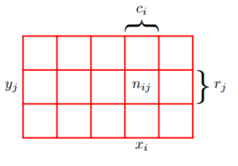

Probability Theory
개요

빨강색,파랑색 상자 중 하나를 선택하고 선택한 상자안에서 사과(초록) 또는 오렌지(주황)를 꺼낸다고 합시다. 여러번 반복했을 때, 빨강색 상자와 파랑색 상자가 선택된 비율이 각각 40%,60%라고 알려져 있는 상태입니다. 미래에 선택된 상자를 나타내는 변수를 B라고 하면 실제로 상자를 선택하기 전까지는 각각의 상자를 뽑을 확률(가능성)만이 존재하므로 변수B는 확률변수 입니다. 이 확률변수가 취할 수 있는 값은 r 또는 b로 두 가지 입니다. 마찬가지로 미래에 선택된 과일을 나타내는 확률변수 F를 놓을 수 있고 F가 취할 수 있는 값을 a 또는 o로 놓을 수 있습니다.
빈도주의 관점에서 어떠한 사건이 발생할 확률은 매우 여러번 시행을 반복했을때, 어떤 사건이 나오는 경우의 비율(fraction,ratio)입니다. 예를 들어 주사위 눈이 3이나올 확률이 50%라고 하면 100번 던졌을때 50번정도는 3이 나오는 것으로 이해할 수 있습니다. 위의 문제에서 여러번 반복했을때 빨강색 또는 파랑색상자인 사건이 발생하는 경우가 각각 전체에서 40%,60%였다고 했으므로 이는 확률입니다. 또한 확률변수 B가 r을 취하는 사건에 대한 확률과 확률변수 B가 b를 취하는 사건에 대한 확률이라고 말하며 다음과 같이 적을 수 있습니다.
\[\begin{aligned} p(B = r) = 0.4 \\ p(B = b) = 0.6 \end{aligned}\]각각의 상자를 선택하는 사건의 확률은 확률의 정의에 의해서 [0,1]사이의 구간에만 존재합니다. 또한 각각의 상자를 선택하는 사건은 상호베타적이면서 시행으로부터 나올 수 있는 모든 결과들 입니다. 그러므로 확률의 합은 1입니다.
몇 가지 궁금한 점이 생겼습니다. “사과(초록)이나 오렌지(주황)가 나올 확률은?” 또는 “사과를 뽑았을 때 어떤 상자를 선택할 가능성이 높은지?”에 대해서 궁금합니다. 이는 sum rule과 product rule을 알아야 합니다.
Sum Rule & Product Rule

확률변수 \(X,Y\)가 존재하고 \(X\)가 취할 수 있는 값은 \(x_i(i=1,2,\dots,M)\) \(Y\)가 취할 수 있는 값은 \(y_j(j=1,2,\dots,L)\)라고 합시다. 총 \(N\)번을 시행했다고 할 때,시행의 결과 중 \(X = x_i\)이면서 동시에 \(Y=y_i\)인 경우는 \(n_{ij}\)번 나왔으며 \(X = x_i\)인 경우는 \(c_i\)번 나왔고 확률변수 \(Y = y_j\)인 경우는 \(r_j\)번이 나왔습니다.
확률변수 \(X = x_i\)이고 \(Y=y_j\)인 사건이 동시에 발생할 확률을 \(X=x_i,Y=y_j\)일 때의 결합확률(joint probability)라고 합니다.
\[p(X = x_i,Y = y_j)\]
결합확률은 매우 여러번 시행했을 때, \(X=x_i,Y=y_j\)인 사건이 나오는 경우의 \(n_{ij}\) 비율입니다.
\[N \rightarrow \infty,\,\, p(X=x_i,Y=y_j) = \frac{n_{ij}}{N}\]
시행으로부터 확률변수 \(X = x_i\)인 사건이 몇 번 나왔는지 알기위해서는 \(c_i\)는 \(X = x_i,Y = y_j(\text{for } j=1,2,\dots,L)\)인 사건이 발생하는 모든 경우를 전부 다 더해야 합니다. 예를 들어서 사과를 선택하는 \(F = a\)이 경우는 사과를 선택하고 상자가 파랑색 상자인 \(F=a,B=r\) 사건이 발생한 경우와 사과를 선택하고 상자가 빨강색 상자인\(F=a,B=b\) 사건이 발생한 경우이므로 시행으로부터 두 가지 케이스에 해당하는 모든 경우를 모두 세어야 합니다.
\[c_i = \sum_{j=1}^{L}n_{ij}\]
결과적으로 ,\(X = x_i\)인 사건의 확률은 다음과 같습니다.
\[\begin{aligned} p(X = x_i) &= \frac{c_{i}}{N} \\ &=\frac{\sum_{j=1}^{L}n_{ij}}{N}\\ &= p(X=x_i,Y=y_1) + p(X=x_i,Y=y_2) + \dots + p(X=x_i,Y=y_L) \\ &= \sum_{j=1}^{L}p(X=x_i,Y=y_j) \\ \end{aligned}\]위와 같이 하나의 확률변수에 대한 확률을 구할 때, 다른 확률변수와의 모든 결합확률을 더하여 구하는 법칙을 sum rule of probability라고 합니다. 이때 다른 확률변수와 결합확률을 marginalizing 또는 summing out하여 구하므로 marginal probability라고 합니다.
시행의 결과가 \(X=x_i\)인 특정 조건을 만족하는 경우에 대해서만 고려해본다고 합시다. 조건에 맞는 경우안에서 \(Y = y_j\)인 사건이 나오는 횟수의 비는 \(p(Y=y_j|X=x_i)\)라고 표기하며 다음과 같습니다.
\[p(Y=y_j|X=x_i) = \frac{n_{ij}}{c_j}\]
이를 \(X=x_i\)로 주어졌을 때, \(Y=y_j\)인 사건에 대한 조건부확률이라고 합니다. 조건부 확률의 경우 기호\(|\) 다음에 조건이 오며 분모에는 조건에 해당하는 사건이 나오는 경우가 몇 번인지 그 횟수에 값이 오지만 조건부확률이 아닌 그냥 확률의 경우 분모는 몇 번 시행했는지 입니다. 이러한 이유는 조건부확률은 일반적인 확률과 다르게 어떤 특정한 조건안에서 다른사건이 나오는 비율이기 때문입니다.
위에서 정의한 조건부확률로 결합확률을 다시 적어보면 다음과 같습니다.
\[p(X=x_i,Y=y_j) = \frac{n_{ij}}{N} = \frac{n_{ij}}{c_i}\frac{c_i}{N} = p(Y=y_j|X=x_i)p(X = x_i)\]
즉 결합확률은 \(X=x_i\)인 사건이 발생한 확률과 발생한 사건을 조건\(X=x_i\)으로하고 \(Y=y_j\)가 발생할 확률의 곱과 같습니다. 이는 어느정도 직관과 일치한다고 볼 수 있는데 예를 들자면 빨강색상자에서 사과를 뽑을 가능성은 먼저 빨강색상자를 고르고 그 다음 사과를 뽑을 가능성이기 때문입니다.
Bayes rule
위에서 적은 결합확률로부터 다음과 같은 식을 얻어낼 수 있습니다.
\[p(Y|X) = \frac{p(X|Y)p(Y)}{p(X)}\]
이를 베이즈정리 라고 합니다. 베이즈 정리에서 \(p(Y|X)\)는 posterior probability(사후확률)로 어떤 조건 또는 증거가 발견되었을때의 확률입니다. \(p(Y)\)는 prior probability로 어떤 증거 또는 조건이 발견되기전의 확률입니다. 베이즈 정리로부터 우리는 posterior와 prior의 관계 즉,조건 또는 증거가 발견되기 전,후의 확률사이의 수식을 알 수 있습니다. 그러므로 사전확률을 알고 있다면 그 확률을 통하여 사후확률을 구할 수 있습니다.
\[p(Y|X) = \frac{p(X|Y)p(Y)}{p(X)} = \frac{p(X|Y)p(Y)}{\sum_{Y}p(X,Y)} = \frac{p(X|Y)p(Y)}{\sum_{Y}p(X|Y)p(Y)}\]
분모를 sum rule과 product rule에 의하여 더 전개하면 위와 같습니다. 사후확률 \(p(Y|X)\)는 \(X\)라는 증거,조건이 주어질 때 결과 \(Y\)에 대한 확률이었습니다. 위의 수식을 곰곰히 보면 … \(X\)가 조건으로 주어질때 결과\(Y\)에 대한 조건부 확률을 구하기 위하여 \(Y\)가 주어질때의 \(X\)에 대한 조건부 확률로 계산합니다. 여기서 나타나는 베이즈 정리에서 핵심은 어떤 조건이 주어지고 결과에 대한 확률을 구할 때, 결과를 조건으로 조건을 결과로 역으로 바꾼 확률을 사용한다는 점입니다. 즉 \(X\)가 조건일 때, \(Y\)에 대한 조건부 확률이 잘 구해지지 않는다면 이를 뒤집어서 \(Y\)가 조건이고 \(X\)가 결과일때의 확률을 이용할 수 있습니다.
베이즈 정리에서 분모는 normalization 상수로 모든 \(Y\)에 대하여 확률의 합이 1이 되도록 합니다.
예시로 돌아가서 오렌지 또는 사과가 나올 확률과 사과를 골랐을 때 어떤 상자를 골랐을 확률이 높은지를 계산해봅시다. 각각의 경우에 대해 확률을 정리하면 다음과 같습니다.
\[\begin{align} &p(B = r) = 0.4 \\ &p(B = b) = 0.6 \\ &p(F = a | B = r) = \frac{1}{4}\\ &p(F = o | B = r) = \frac{3}{4}\\ &p(F = a | B = b) = \frac{3}{4}\\ &p(F = o | B = b) = \frac{1}{4}\\ \end{align}\]
(3)(4),(5)(6) 각각의 합은 normalization constant로 인해 합이 1이 되는것을 알 수 있습니다.
이어서 원래 궁금했던 첫번째 문제인 사과 또는 오렌지가 나올 확률을 Product rule로 계산해볼 수 있습니다.
\[\begin{aligned} & \begin{aligned} p(F = a) &= p(F=a,B=r) + p(F=a,B=b) \\ &=p(F=a|B=r)p(B=r) + p(F=a|B=b)p(B=b) \\ &=\frac{1}{4}\times\frac{4}{10} + \frac{3}{4}\times\frac{6}{10}\\ &= \frac{11}{20}\\ \end{aligned} \\ &p(F=b) = 1-\frac{11}{20}= \frac{9}{20} \end{aligned}\]또다른 문제인 오렌지 또는 사과를 뽑았을때 어떤 박스를 선택했는지 알고 싶습니다. 즉 알고싶은 확률은 \(p(B|F=a)\) 또는 \(p(B|F=o)\)입니다. 그런데 우리에게 주어진 확률들은 사전확률인 \(p(F)\)와 조건과 결과가 역으로 뒤집힌 확률인 \(p(F|B)\)입니다. 그러므로 ,Bayes Rule을 사용하여 원하는 확률을 구할 수 있습니다.
\[\begin{align} &p(B|F) = \frac{p(F|B)p(F)}{p(B)} \\ &p(B=r|F=o) = \frac{p(F=o|B=r)p(B=r)}{p(F=o)} = \frac{2}{3}\\ &\leftrightarrow p(B=b|F=o) = 1-\frac{2}{3} = \frac{1}{3} \end{align}\]
오렌지를 확인하기전까지는 빨강색 박스일 확률이 절반이 안되는 0.4 였는데 오렌지를 확인하고는 \(\frac{2}{3}\)로 확률이 상승했습니다. 이는 주어지는 정보,주건이 확률에 큰 영향을 미치는 것을 확인할 수 있습니다. 또한 구한 확률이 직관적으로 그림에서 확인할 수 있는 사실과도 일치함을 알 수 있습니다.
random variable independence
두 확률변수가 독립이면 다음과 같습니다.
\[\text{X and Y are independent random variables} \iff p(X,Y) = p(X)p(Y)\]
예시에서 확인해봅시다.
\[\begin{aligned} &p(B=r|F=o) = \frac{2}{3} ,p(B=r) = \frac{4}{10}\\ &p(B=r|F=o) \not = p(B=r) \Longleftrightarrow \text{X and Y are dependent} \end{aligned}\]만약 두 박스안에 들어있는 오랜지와 사과가 같은 비율로 들어있다고 한다면…
\[\begin{aligned} p(F=o | B=r) = p(F = o) \\ p(F=a | B=r) = p(F = a) \\ p(F=o | B=b) = p(F = o) \\ p(F=a | B=b) = p(F = a) \end{aligned}\]따라서 상자안에 있는 과일의 갯수가 같을 경우, 두 확률변수는 독립입니다.
정리
빈도주의 관점에서 확률은 매우여러번 시행했을 때, 어떤 사건이 발생하는(나오는) 비율(ratio)입니다.
Sum rule은 여러확률변수에 대한 결합확률이 주어질 때, 특정한 하나의 변수에 대한 확률(marginal probability)을 구함
\[p(X) = \sum_Yp(X,Y)\]
- Product rule은 조건부확률과 주변확률사이의 곱으로 결합확률을 구함
\[p(X,Y) = p(Y|X)p(X) = p(X|Y)p(Y)\]
- 베이즈정리는 posterior(사후확률)를 prior(사전확률)과 조건과 결과가 바뀌었을때의 확률을 통해서 구합니다. 또한 사전확률과 사후확률사이의 관계(수식)입니다.
\[p(X|Y) = \frac{p(Y|X)p(Y)}{p(X)} = \frac{p(Y|X)p(Y)}{\sum_Yp(X,Y)p(Y)}\]
- 두 확률변수가 독립일 경우 , 결합확률(분포)는 각각의 변수에 대한 (주변)확률의 곱입니다
\[\text{X and Y are independent random variables} \iff p(X,Y) = p(X)p(Y)\]
Appendix
확률변수의 독립에 관한 식 설명
확률변수가 독립이라면 \(Y\)의 조건부확률은 조건\(X\)가 어떤 값이던간에 전혀 영향이 없습니다(독립적입니다).
\[\begin{aligned} &p(Y|X) = p(Y) \\ &\leftrightarrow p(Y|X) = \frac{p(X,Y)}{p(X)} = p(Y)\\ &\leftrightarrow p(X,Y) = p(X)p(Y) \end{aligned}\]반대로 해도 성립합니다.